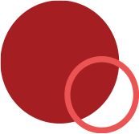
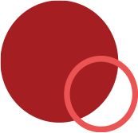

SODASTREAM
syrop malina, 440 ml
Obłędna malina od SodaStream – czyli smak, który zaskoczy Cię słodko-kwaskowatą harmonią! Napój z syropem SodaStream Malina to połączenie intensywnej, malinowej słodyczy i bąbelkowej świeżości. Wypróbuj ten smakowy hit i przenieś się z nim w sam środek gorącego lata.
SodaStream Malina, czyli smak wakacji


Dodaj syrop SodaStream Malina do wody gazowanej i...

takimi jak świeże maliny
czy cynamon.

smakiem bez dodatku cukru.

Jedna SodaStream - Wiele Możliwości


Owocowe orzeźwienie w 3 krokach
Masz ochotę na subtelnie słodki, intensywnie malinowy i orzeźwiająco bąbelkowy napój? Z syropem SodaStream Malina przygotujesz go w 3 krokach!


Witaminy i mikroelementy – duet idealny!**
SodaStream Malina.


(EFSA NR 432/2021:291 ,1757; EFSA NR 432/2021: 77, EFSA NR 432/2021: 47)
Aż 9 l
bąbelkowego orzeźwienia
 


Jedna butelka syropu o pojemności 440 ml
pozwala na przygotowanie
aż 9 litrów
pysznego napoju. Smakuj bąbelki z
bliskimi i twórz wspomnienia!

Esencja wakacji w każdej kropli
Zimna woda gazowana, syrop SodaStream Malina, kilka kostek lodu – i cudownie orzeźwiająca, malinowa lemoniada gotowa! Wybierz tą wersję, jeśli masz ochotę na słodką przerwę o poranku lub w trakcie pracy.

Wyczaruj napój, z którym dodasz barw swojej codzienności. Wystarczy dodać lód i ulubione owoce. Plasterki cytryny, maliny i borówki pasują perfekcyjnie.

Na bazie SodaStream Malina przygotujesz też lekki moktajl - idealny na garden party. Do szklanki wypełnionej lodem dodaj ekstrakt waniliowy, syrop malinowy i sok z cytryny. Dopełnij wodą gazowaną i udekoruj świeżymi malinami. Gotowe!

Co warto wiedzieć o SodaStream? Sprawdź Q&A
Wybierz ekspres, który pasuje do Twoich potrzeb i designu Twojej kuchni.
Masz do wyboru: prostą i klasyczną Terrę, utrzymany w duchu retro Art, elegancki DUO oraz efektowny Ensõ. Wszystkie są bezprzewodowe i łatwe w obsłudze oraz są wyposażone w butelkę i nabój CO₂, dzięki czemu od razu możesz rozpocząć swoją przygodę z bąbelkami!
Saturator działa dzięki mocy dwutlenku węgla, który znajduje się w naboju CO₂. Dzięki wytwarzanemu w naboju ciśnieniu powstają bąbelki – bez prądu i baterii.
Tak, świeża woda z kranu idealnie nadaje się do gazowania w saturatorze. Dzięki temu nie musisz już kupować wody ze sklepu, do przygotowania świeżo nagazowanej wody wystarczy Ci woda z kranu i saturator SodaStream.
Eksperymentuj i ciesz się smakiem
Klasyczne napoje gazowane, takie jak Pepsi, Pepsi Cherry, Mirinda, 7 UP czy Lipton Ice Tea Lemon – z SodaStream możesz teraz przygotować samodzielnie w domu! Wybierz ulubione warianty i twórz napoje na własnych zasadach.

Cola, Xtreme Energy i Tonik – to trzy smaki, które nigdy nie wychodzą z mody. Wybierz swój ulubiony i ciesz się bąbelkowym orzeźwieniem w każdej chwili.

Syrop Malinowy to dopiero początek! W portfolio SodaStream znajdziesz też inne owocowe warianty bez dodatku cukru, m.in. Owoce Leśne, Marakuję czy Lemoniadę.
Zostań miksologiem! Z SodaStream Crafted stworzysz koktajle i moktajle, które oczarują Twoich bliskich! Poznaj niebanalne połączenia smakowe i rozbudź swoją kreatywność.
W portfolio SodaStream znajdziesz też: